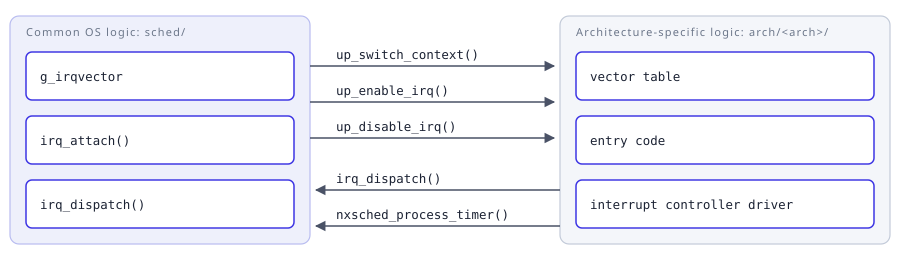
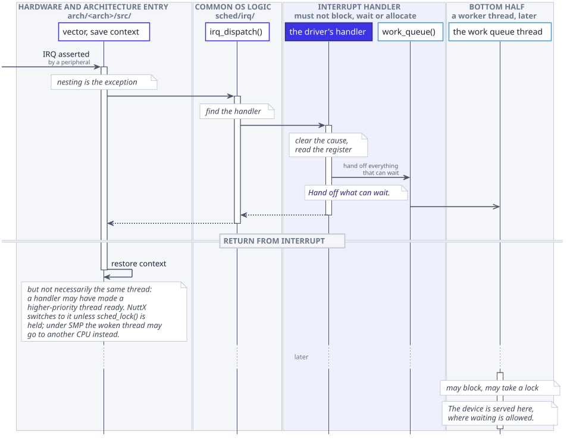
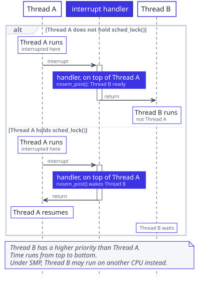

Interrupts
This page aims to explain the interrupt flow in NuttX. The idea is to show since the moment where the peripheral / hardware event triggers the interrupt line up to the moment where one thread returns its execution.
Where the code lives
The NuttX interrupt subsystem code is split in two parts which one with a clear and rigorous responsibility in order to ensure portability.
The common OS Logic
This is the agnostic part, the common OS (operating system) logic, where the
code manages the interrupt logic regardless the architecture, i.e., it is
treated in a generic way. This code is located in sched/irq/ and below it
is explained how this part is managed:
Where is the data stored?
In the NuttX, g_irqvector is a central data struct used by the kernel to
manage the interrupt request (IRQ). In simple terms, one table where NuttX
stores the pointers towards the interrupt handler functions (handlers/ISRs,
interrupt service routines) that was registered by the peripheral drivers.
Plus, this table also stores the handler argument. By the way, normally the
index is the IRQ number itself; with CONFIG_ARCH_MINIMAL_VECTORTABLE, a
smaller table saves RAM (random access memory) and a map translates the IRQ
number into its position (If CONFIG_SCHED_IRQMONITOR is enabled, this
table will also stores statistics).
How does the register is being made?
Via function irq_attach(). This function is used by a peripheral driver to
register an interrupt handler with the NuttX kernel. This will tell to the
system which specific callback function should be executed whenever such a
particular interrupt request has been triggered. So, in other words, the
driver goes to the kernel and says: when this IRQ happens, then, call that
function.
So, when the function irq_attach(int irq, xcpt_t isr, void *arg) is
executed (usually during the driver/ subsystem bring-up), the function will:
validates whether the informed IRQ number is supported;
stores the handler function pointer (ISR) in the related position in the kernel internal table (with
CONFIG_IRQCHAIN, several functions could share the same IRQ and, therefore, the position starts to points to the chain).Optionally associates a context argument (
arg) that will be send to the handler when the trigger happens
In summary, irq_attach() is a pure pre-configuration routine that does not
handles the hardware itself, instead, just fill out the register table that
the Kernel will check later on. The exception is the removal: with a NULL
handler (isr), it disables the line with up_disable_irq(), when the
architecture allows it, before giving the position back to
irq_unexpected_isr().
How is the handler called?
The architecture layer calls irq_dispatch(int irq, void *context),
passing the identified IRQ number. This is where control passes from the
hardware-dependent part (specific architecture) to the agnostic core
(sched/irq/). There, irq_dispatch():
looks up
g_irqvectorwith the IRQ number that was received;finds and invokes the function pointer (handler) which was previously registered by the driver;
runs the handler routine on top of the current stack.
As soon as the driver handler finishes its job and returns to
irq_dispatch, the irq_dispatch() returns the control to the
architecture layer. If the handler has woken a thread with a higher priority,
that decision was already taken during the handler itself; now, the
architecture layer performs the context switch via
nxsched_switch_context().
What is the logic so?
So, in a system without these protections (not NuttX), if in the
initialization the drivers have not registered anything yet, the table would
hold NULL pointers. In this case, when an interrupt arrives, a dispatcher
like irq_dispatch() (which is explained above) would try to call a
function at address zero and, as a result, we would have a hard fault with
no clue about which IRQ has broken the system.
To avoid such a problem, NuttX never leaves the table empty: in the
initialization, every entry points to irq_unexpected_isr().
irq_dispatch() also falls back to irq_unexpected_isr() when it finds
an empty entry. So, if the IRQ line is released before the handler is
connected, any immediate event that comes from the peripheral calls this
function, which puts the system in panic (PANIC()) and, if
CONFIG_DEBUG_ERROR is enabled, prints the number of the IRQ. Therefore,
the rule is: the driver registers its handler before enabling the interrupt
(usually during the bring-up phase).
The arch-specific Logic
Everything that varies from one chip to another chip remains confined in
arch/<arch>/, e.g.: arch/arm, arch/risc-v, arch/xtensa, etc.
This layer holds the hardware interrupt vector table (not to be confused
with g_irqvector, the table of the common logic), the low level entry
code that runs immediately after the event is triggered, and the drivers
that directly control the interrupt controller of the processor (such as
the NVIC, Nested Vectored Interrupt Controller, on Arm).
The trigger: when the peripheral activates its interrupt line, the
interrupt controller (such as the NVIC) captures the event and tells the
CPU, which uses the hardware vector table to divert the flow to the low
level entry code of the architecture (arch/<arch>/). The CPU and the
entry code save the context of the thread that was running.
The specific architecture code determines, hence, what IRQ number an specific
event belongs to and calls the function irq_dispatch, given the control to
the common OS logic, as described above. Once irq_dispatch returns, the
specific arch-code resumes a thread execution (it could be a thread that was
interrupted, or other one (case the handler has been woken a major priority
thread; in such case after the switch control has been performed via
nxsched_switch_context()).
The two sides interact via a small set of functions. The common logic
requests that the architecture perform a thread switch using
up_switch_context(), and enable or disable an interrupt line using
up_enable_irq() and up_disable_irq() (drivers also invoke these
two). In the opposite direction, the architecture calls irq_dispatch()
for every interrupt it delivers, while the timer code calls
nxsched_process_timer() to notify the scheduler that time has elapsed.
The up_* functions are described on the
os/arch/arch_api page.


The common OS logic and the architecture-specific logic, and the functions each one calls in the other.
Interrupt and exception
The vocabulary changes from one architecture to another. For instance, on Arm, “exception” is a general term that includes interrupts too. On the other hand, on RISC-V, “exception” is only the event caused by an instruction and, therefore, the general term in this architecture is “trap”, which means: the jump to the handler, caused by either an interrupt or an exception.
In this page, an interrupt is the event that comes from outside, while
an exception is what arises from the instruction itself. In NuttX, as
described before, the architecture-specific layer (arch/<arch>/) manages
the hardware vector table and captures the event. There are two distinct
origins:
Asynchronous interrupts (interrupts): Triggered by sources external to the CPU (peripherals, GPIO (General Purpose Input/Output) pins, timers, or communication buses), they occur asynchronously with respect to the code the CPU is currently executing.
Synchronous exceptions (exceptions): Generated internally by the CPU itself as a direct result of the instruction that has just been executed (such as memory access violations, invalid instructions, or system calls). They are, hence, linked to the instruction that was running.
Despite their different origins, NuttX treats both in the same way: the
architecture layer converts each one into an IRQ number, and
irq_dispatch() calls the handler registered via irq_attach().
What each kind of interrupt triggers
Although a microcontroller or SoC (System on Chip) may have dozens or even
hundreds of specific hardware interrupt lines, they all rely on the same
fundamental registration and dispatch mechanism (implemented via
irq_attach() and irq_dispatch()). An alternative approach, on some
architectures, involves “zero-latency” interrupts, which are designed to
intentionally bypass the irq_dispatch() routine. The
zerolatencyinterrupts
page explains how and when to use them. Pretty much any event (physical or
logical) that changes the CPU flow falls into one of the following generic
classifications.
The typical sources of interrupts and the processes that follow their respective handlers include:
The system timer: A hardware timer triggers at a fixed rate or, in
“tickless” mode, when the next timeout expires. Its handler calls
nxsched_process_timer(). Time advances, expired timeouts are processed,
and a thread whose wait has ended is moved to the “ready” state.
A peripheral: A device has data available, or its transmission buffer has
become empty. The driver’s handler moves the data and releases a semaphore
using nxsem_post(), which transitions a thread that was waiting for the
read operation back to the “ready” state.
Completion of a DMA (Direct Memory Access) transfer: The DMA engine has independently moved a block of memory and reports its completion. Its handler invokes a driver callback, which signals a semaphore, making a thread that was waiting for the transfer “ready.”
Software interrupt: A program intentionally executes a “trap”
instruction. NuttX uses this mechanism to request a context switch from a
thread and, when CONFIG_LIB_SYSCALL is enabled, to facilitate the
transition from user space to the kernel.
A fault: An instruction fails during execution. On armv7-m, for example, a hard fault that cannot be handled results in a “kernel panic.”
An IPI (Inter-Processor Interrupt): In symmetric multiprocessing (SMP)
environments, one CPU interrupts another, for instance, to signal that a
thread is ready to run on that specific core. The receiving CPU executes
nxsched_process_delivered().
The path of an interrupt

From the peripheral asserting the line to the return, and where the work that cannot be done in a handler goes instead.
When a peripheral (such as a UART (Universal Asynchronous
Receiver/Transmitter), timer, or bus controller) signals its dedicated IRQ
line, the interrupt controller intercepts the signal and notifies the CPU.
The CPU interrupts the currently executing thread (let’s call it
Thread A) and redirects the execution flow to the architecture-specific
entry code. Together, the CPU and the architecture code save the context,
allowing Thread A to be resumed later, identify the IRQ number, and call
irq_dispatch(), which triggers the driver’s handler. Once the handler
finishes, the CPU resumes the execution of a thread.
It is very common for the handler to wake up a higher-priority thread that
was waiting for the event (let’s call it Thread B), for instance, by
releasing a semaphore via nxsem_post(). When this occurs, NuttX applies
preemptive scheduling: instead of restoring the context of Thread A, the
kernel switches directly to Thread B (unless Thread A has preemption
disabled via sched_lock()). In SMP systems, this newly awakened thread
may be dispatched to another core.

Returning from an interrupt may resume a different thread.
To make this possible, the work is divided among the kernel layers: the common OS logic decides which thread should run next (by placing Thread B into the ready-to-run list), while the architecture-specific logic carries out the context switch once the handler finishes.
Therefore, exiting an interrupt does not necessarily mean returning to the same thread that was interrupted.
What a handler may do
An interrupt handler is not a thread. irq_dispatch() invokes it like a
standard function, executing within the context of the thread that was
interrupted (Thread A). Consequently, any call that acts upon “the current
thread” affects Thread A, not the handler itself.
For this reason, a handler must not block. NuttX does not always prevent
a handler from calling a blocking function; adhering to this rule is the
responsibility of the driver developer. Any operation that requires waiting,
allocating memory, or acquiring a lock that might cause the thread to sleep
(such as a mutex or a semaphore) must be deferred, which is the purpose of
“bottom halves” and “work queues” (see
bottomhalf_interrupt). If a handler requires a
counting semaphore, it should use nxsem_trywait() (the kernel form of
sem_trywait()), which attempts to acquire the semaphore without
blocking; if the semaphore is unavailable, it returns immediately.
A spinlock is different: it spins rather than sleeps. When a handler in an
SMP environment requires one, it acquires it using spin_lock_irqsave().
Allocating memory is also unsafe. malloc() acquires a heap lock; if a
thread happens to hold this lock when an interrupt occurs (or, in an SMP
system, at any time), the allocation will either trigger an assertion (if
CONFIG_DEBUG_ASSERTIONS is enabled) or result in the heap being accessed
without the necessary lock.
When deferred work requires its own thread, irq_attach_thread() creates
a kernel thread for the interrupt, while irq_attach_wqueue() offloads the
work to an interrupt work queue (which requires CONFIG_SCHED_WORKQUEUE).
In both cases, the isr argument runs in interrupt context; if it is not
NULL, the thread will only execute once the isr returns
IRQ_WAKE_THREAD.
Nesting
On most architectures, an interrupt handler is not interrupted by another interrupt. Nesting is the exception rather than the rule, and the nestedinterrupts page covers this scenario.
The interrupt stack
An interrupt handler requires a stack. Where the architecture supports it,
CONFIG_ARCH_INTERRUPTSTACK provides handlers with a dedicated stack of a
specified size (in bytes). The default value is 0, in which case the handler
runs on the stack of the interrupted thread, which must, therefore, have
sufficient space to accommodate it. SMP configurations require a value other
than 0.
Protecting code from interrupts
For protecting a section of code, note that disabling interrupts and locking pre-emption are not the same choice and do not cost the same. See Critical Sections for the difference, and Effects of Disabling Interrupts or Pre-Emption on Response Latency for what each one does to response time.